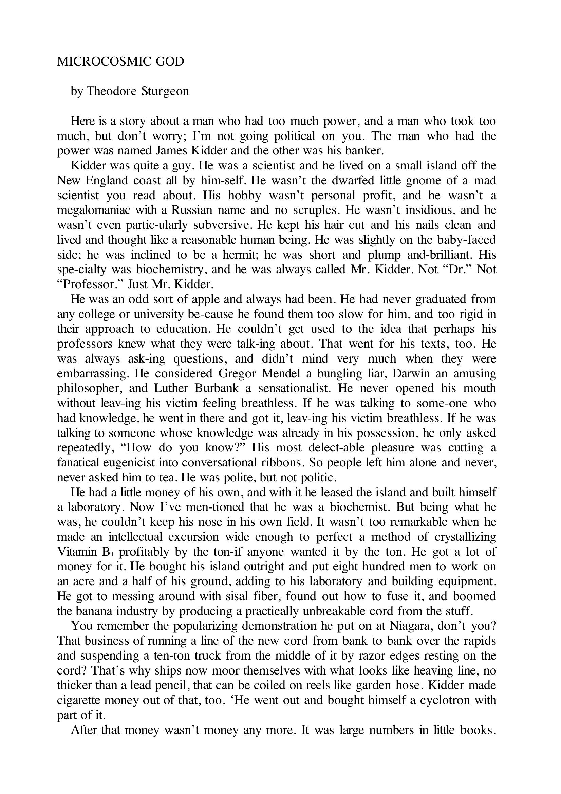
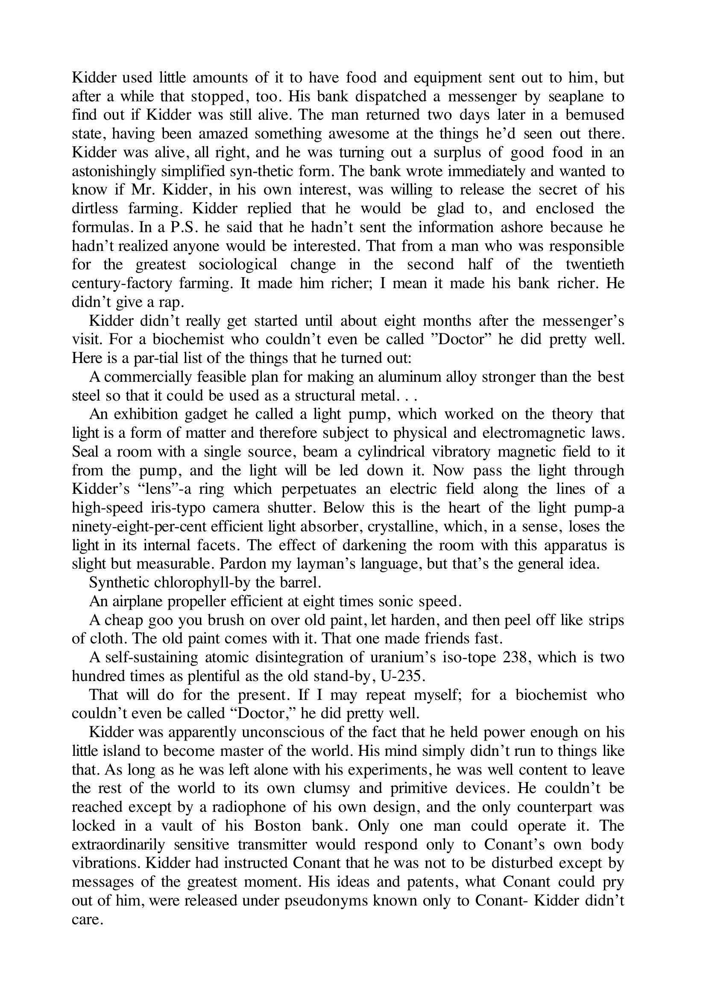
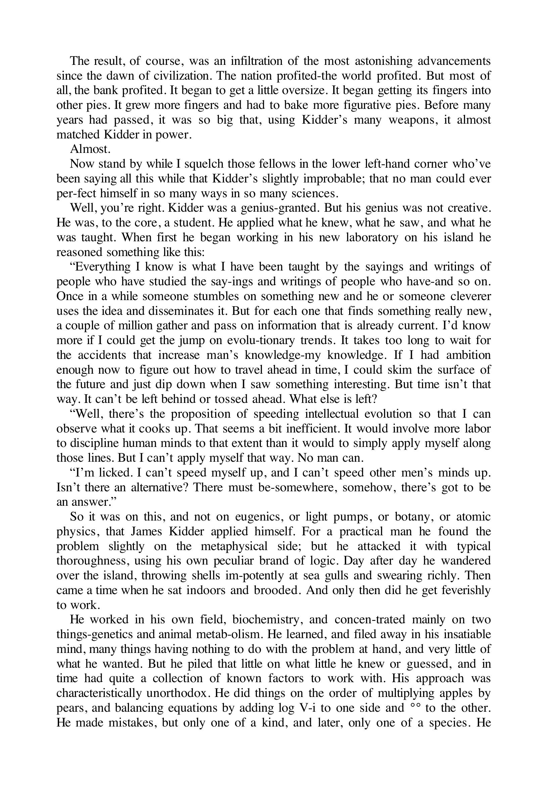
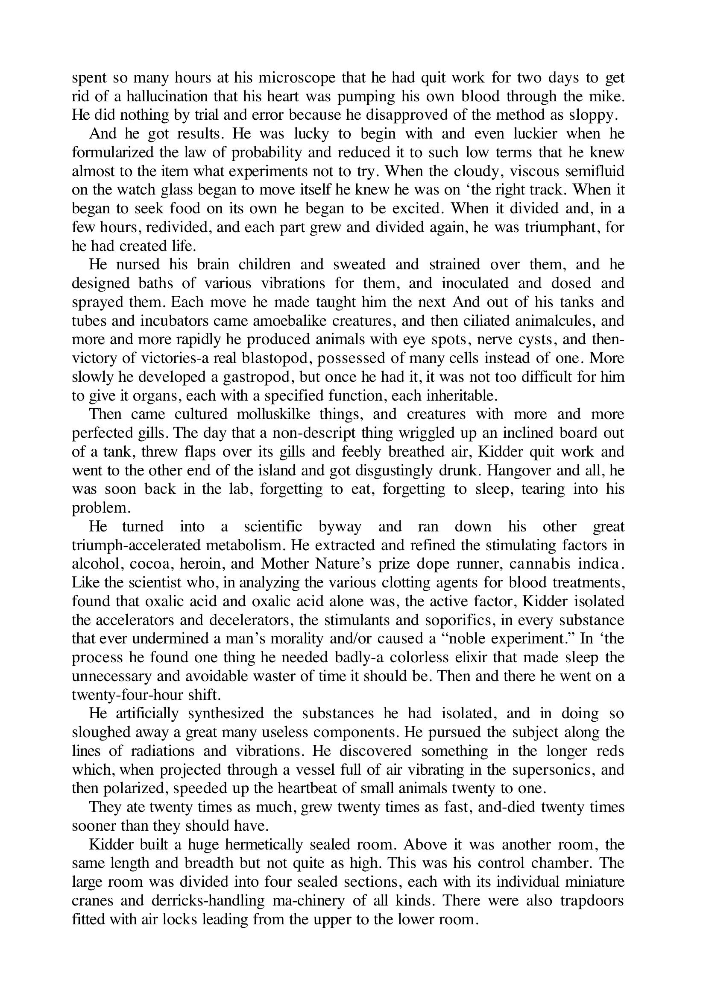

Here is a story about a man who had too much power, and a man who took too much, but don't worry; I'm not going political on you. The man who had the power was named James Kidder and the other was his banker.
Kidder was quite a guy. He was a scientist and he lived on a small island off the New England coast all by himself. He wasn't the dwarfed little gnome of a mad scientist you read about. His hobby wasn't personal profit, and he wasn't a megalomaniac with a Russian name and no scruples. He wasn't insidious, and he wasn't even particularly subversive. He kept his hair cut and his nails clean and lived and thought like a reasonable human being. He was slightly on the baby-faced side; he was inclined to be a hermit; he was short and plump and brilliant. His specialty was biochemistry, and he was always called Mr. Kidder. Not "Dr." Not "Professor." Just Mr. Kidder.
He was an odd sort of apple and always had been. He had never graduated from any college or university because he found them too slow for him, and too rigid in their approach to education. He couldn't get used to the idea that perhaps his professors knew what they were talking about. That went for his texts, too. He was always asking questions, and didn't mind very much when they were embarrassing. He considered Gregor Mendel a bungling liar, Darwin an amusing philosopher, and Luther Burbank a sensationalist. He never opened his mouth without leaving his victim feeling breathless. If he was talking to someone who had knowledge, he went in there and got it, leaving his victim breathless. If he was talking to someone whose knowledge was already in his possession, he only asked repeatedly, "How do you know?" His most delectable pleasure was cutting a fanatical eugenicist into conversational ribbons. So people left him alone and never, never asked him to tea. He was polite, but not politic.
He had a little money of his own, and with it he leased the island and built himself a laboratory. Now I've mentioned that he was a biochemist. But being what he was, he couldn't keep his nose in his own field. It wasn't too remarkable when he made an intellectual excursion wide enough to perfect a method of crystallizing Vitamin B1 profitably by the ton—if anyone wanted it by the ton. He got a lot of money for it. He bought his island outright and put eight hundred men to work on an acre and a half of his ground, adding to his laboratory and building equipment. He got to messing around with sisal fiber, found out how to fuse it, and boomed the banana industry by producing a practically unbreakable cord from the stuff. You remember the popularizing demonstration he put on at Niagara, don't you? That business of running a line of the new cord from bank to bank over the rapids and suspending a ten-ton truck from the middle of it by razor edges resting on the cord? That's why ships now moor themselves with what looks like heaving line, no thicker than a lead pencil, that can be coiled on reels like garden hose. Kidder made cigarette money out of that, too. He went out and bought himself a cyclotron with part of it.
After that money wasn't money any more. It was large numbers in little books.
הנה סיפור על אדם שהייתה לו יותר מדי עוצמה, ועל אדם שלקח יותר מדי, אבל אל תדאגו — אני לא הולך לפוליטיקה. האיש שהחזיק בעוצמה נקרא ג'יימס קידר, והשני היה הבנקאי שלו.
קידר היה בחור לא רע בכלל. הוא היה מדען והוא חי על אי קטן מול חופי ניו אינגלנד, לבד לגמרי. הוא לא היה הגמד הקטנטן של מדען משוגע שקוראים עליו בספרים. התחביב שלו לא היה רווח אישי, והוא לא היה מגלומן עם שם רוסי וללא מצפון. הוא לא היה ערמומי, והוא אפילו לא היה חתרני במיוחד. הוא שמר על שיערו מסופר וציפורניו נקיות, וחי וחשב כבן-אדם סביר. הוא היה קצת מהצד של פנים-של-תינוק; הוא נטה להתבודדות; הוא היה נמוך ושמנמן ו—מבריק. ההתמחות שלו הייתה ביוכימיה, ותמיד קראו לו מר קידר. לא "ד"ר". לא "פרופסור". סתם מר קידר.
הוא היה סוג מוזר של בן-אדם ותמיד היה כזה. הוא מעולם לא סיים שום מכללה או אוניברסיטה כי מצא אותן איטיות מדי עבורו, ונוקשות מדי בגישתן לחינוך. הוא לא הצליח להתרגל לרעיון שאולי הפרופסורים שלו ידעו על מה הם מדברים. זה חל גם על ספרי הלימוד שלו. הוא תמיד שאל שאלות, ולא מאוד הפריע לו כשהן היו מביכות. הוא ראה בגרגור מנדל שקרן מגושם, בדארווין פילוסוף משעשע, ובלותר בורבנק סנסציונליסט. הוא מעולם לא פתח את פיו בלי להשאיר את קורבנו חסר נשימה. אם הוא דיבר עם מישהו שהיה לו ידע, הוא נכנס לשם וחילץ אותו, והשאיר את קורבנו מחוסר נשימה. אם הוא דיבר עם מישהו שהידע שלו כבר היה ברשותו, הוא רק שאל שוב ושוב: "מאיפה אתה יודע?" התענוג הנעים ביותר שלו היה לחתוך אאוגניסט קנאי לרצועות בשיחה. אז אנשים השאירו אותו לבד ומעולם, מעולם לא הזמינו אותו לתה. הוא היה מנומס, אבל לא דיפלומטי.
היה לו קצת כסף משלו, ואיתו הוא חכר את האי ובנה לעצמו מעבדה. עכשיו, כבר הזכרתי שהוא היה ביוכימאי. אבל בהיותו מה שהיה, הוא לא יכול היה לשמור את האף בתוך התחום שלו. זה לא היה יוצא דופן במיוחד כשהוא עשה סיור אינטלקטואלי רחב דיו כדי לשכלל שיטה לגיבוש ויטמין B1 ברווחיות בכמויות של טונות — אם מישהו רצה את זה בטונות. הוא קיבל הרבה כסף על זה. הוא קנה את האי לגמרי והעסיק שמונה מאות איש על דונם וחצי מהקרקע שלו, כשהוא מרחיב את המעבדה ובונה ציוד. הוא התחיל להתעסק עם סיב סיסל, גילה איך להתיך אותו, והעלה את תעשיית הבננות על ידי ייצור חבל כמעט בלתי שביר מהחומר. אתם זוכרים את ההדגמה הפופולרית שהוא עשה בניאגרה, נכון? העניין של מתיחת קו מהחבל החדש מגדה לגדה מעל המפלים ותליית משאית של עשרה טון מהאמצע על להבי סכין שנחים על החבל? לכן אוניות עכשיו מעגנות את עצמן עם מה שנראה כמו חבל השלכה, לא עבה יותר מעיפרון, שאפשר לגלגל על סלילים כמו צינור גינה. קידר עשה מזה כסף קטן גם כן. הוא יצא וקנה לעצמו ציקלוטרון עם חלק ממנו.
אחרי זה כסף כבר לא היה כסף. הוא היה מספרים גדולים בפנקסים קטנים.

Kidder used little amounts of it to have food and equipment sent out to him, but after a while that stopped, too. His bank dispatched a messenger by seaplane to find out if Kidder was still alive. The man returned two days later in a bemused state, having been amazed something awesome at the things he'd seen out there. Kidder was alive, all right, and he was turning out a surplus of good food in an astonishingly simplified synthetic form. The bank wrote immediately and wanted to know if Mr. Kidder, in his own interest, was willing to release the secret of his dirtless farming. Kidder replied that he would be glad to, and enclosed the formulas. In a P.S. he said that he hadn't sent the information ashore because he hadn't realized anyone would be interested. That from a man who was responsible for the greatest sociological change in the second half of the twentieth century—factory farming. It made him richer; I mean it made his bank richer. He didn't give a rap.
Kidder didn't really get started until about eight months after the messenger's visit. For a biochemist who couldn't even be called "Doctor" he did pretty well. Here is a partial list of the things that he turned out:
A commercially feasible plan for making an aluminum alloy stronger than the best steel so that it could be used as a structural metal. . .
An exhibition gadget he called a light pump, which worked on the theory that light is a form of matter and therefore subject to physical and electromagnetic laws. Seal a room with a single source, beam a cylindrical vibratory magnetic field to it from the pump, and the light will be led down it. Now pass the light through Kidder's "lens"—a ring which perpetuates an electric field along the lines of a high-speed iris-type camera shutter. Below this is the heart of the light pump—a ninety-eight-per-cent efficient light absorber, crystalline, which, in a sense, loses the light in its internal facets. The effect of darkening the room with this apparatus is slight but measurable. Pardon my layman's language, but that's the general idea.
Synthetic chlorophyll—by the barrel.
An airplane propeller efficient at eight times sonic speed.
A cheap goo you brush on over old paint, let harden, and then peel off like strips of cloth. The old paint comes with it. That one made friends fast.
A self-sustaining atomic disintegration of uranium's isotope 238, which is two hundred times as plentiful as the old stand-by, U-235.
That will do for the present. If I may repeat myself; for a biochemist who couldn't even be called "Doctor," he did pretty well.
Kidder was apparently unconscious of the fact that he held power enough on his little island to become master of the world. His mind simply didn't run to things like that. As long as he was left alone with his experiments, he was well content to leave the rest of the world to its own clumsy and primitive devices. He couldn't be reached except by a radiophone of his own design, and the only counterpart was locked in a vault of his Boston bank. Only one man could operate it. The extraordinarily sensitive transmitter would respond only to Conant's own body vibrations. Kidder had instructed Conant that he was not to be disturbed except by messages of the greatest moment. His ideas and patents, what Conant could pry out of him, were released under pseudonyms known only to Conant—Kidder didn't care.
קידר השתמש בסכומים קטנים ממנו כדי שישלחו לו אוכל וציוד, אבל אחרי זמן מה גם זה נפסק. הבנק שלו שלח שליח במטוס ים כדי לברר אם קידר עדיין בחיים. האיש חזר יומיים מאוחר יותר במצב של תדהמה, לאחר שהופתע עד עמקי נשמתו מהדברים שראה שם. קידר היה חי, בהחלט, והוא הפיק עודפי מזון טוב בצורה סינתטית פשוטה להפליא. הבנק כתב מיד ורצה לדעת אם מר קידר, לטובתו שלו, מוכן לחשוף את סוד החקלאות ללא אדמה שלו. קידר השיב שישמח לעשות זאת, וצירף את הנוסחאות. בנ"ב הוא כתב שלא שלח את המידע לחוף כי לא הבין שמישהו יתעניין. וזה מאדם שהיה אחראי לשינוי הסוציולוגי הגדול ביותר במחצית השנייה של המאה העשרים — חקלאות תעשייתית. זה העשיר אותו; כלומר, זה העשיר את הבנק שלו. הוא לא נתן פרוטה.
קידר לא באמת התחיל עד כשמונה חודשים אחרי ביקור השליח. עבור ביוכימאי שאפילו לא ניתן היה לקרוא לו "דוקטור", הוא הסתדר לא רע. הנה רשימה חלקית של הדברים שהוא הפיק:
תוכנית מעשית מסחרית לייצור סגסוגת אלומיניום חזקה יותר מהפלדה הטובה ביותר, כך שניתן יהיה להשתמש בה כמתכת מבנית. . .
גאדג'ט תצוגה שהוא קרא לו משאבת אור, שעבד על התיאוריה שאור הוא צורה של חומר ולכן כפוף לחוקים פיזיקליים ואלקטרומגנטיים. אטמו חדר עם מקור אור יחיד, כוונו אליו שדה מגנטי רוטט גלילי מהמשאבה, והאור ייסחף למטה. כעת העבירו את האור דרך ה"עדשה" של קידר — טבעת המנציחה שדה חשמלי לאורך קווי תריס מצלמה מסוג אירוס מהיר. מתחת לכך נמצא לב משאבת האור — סופג אור גבישי ביעילות של תשעים ושמונה אחוז, שבמובן מסוים, מאבד את האור בפנים הגבישיות שלו. ההשפעה של החשכת החדר במכשיר הזה קלה אך ניתנת למדידה. סליחה על השפה הלא-מקצועית שלי, אבל זה הרעיון הכללי.
כלורופיל סינתטי — בחביות.
מדחף מטוס יעיל במהירות של שמונה מאך.
חומר זול שמורחים על צבע ישן, נותנים לו להתקשות, ואז מקלפים כמו רצועות בד. הצבע הישן יורד איתו. זה עשה חברים מהר.
התפרקות אטומית עצמית של איזוטופ 238 של אורניום, שהוא נפוץ פי מאתיים מהוותיק, U-235.
זה יספיק לעת עתה. אם אני רשאי לחזור על עצמי; עבור ביוכימאי שאפילו לא ניתן היה לקרוא לו "דוקטור", הוא הסתדר לא רע.
קידר כנראה לא היה מודע לעובדה שהוא מחזיק בכוח מספיק באי הקטן שלו כדי להפוך לאדון העולם. המוח שלו פשוט לא עבד בכיוון הזה. כל עוד הניחו לו לבד עם הניסויים שלו, הוא היה מרוצה לחלוטין להשאיר את שאר העולם לכלים המגושמים והפרימיטיביים שלו. לא ניתן היה להשיג אותו אלא באמצעות רדיופון מתכנון עצמי, והמכשיר המקביל היחיד היה נעול בכספת של הבנק שלו בבוסטון. רק אדם אחד יכול היה להפעיל אותו. המשדר הרגיש במיוחד הגיב רק לרטטי הגוף של קונאנט עצמו. קידר הורה לקונאנט שלא יפריעו לו אלא בהודעות מהחשיבות הגבוהה ביותר. הרעיונות והפטנטים שלו, מה שקונאנט הצליח לחלץ ממנו, שוחררו תחת שמות בדויים הידועים רק לקונאנט — לקידר לא היה אכפת.

The result, of course, was an infiltration of the most astonishing advancements since the dawn of civilization. The nation profited—the world profited. But most of all, the bank profited. It began to get a little oversize. It began getting its fingers into other pies. It grew more fingers and had to bake more figurative pies. Before many years had passed, it was so big that, using Kidder's many weapons, it almost matched Kidder in power.
Almost.
Now stand by while I squelch those fellows in the lower left-hand corner who've been saying all this while that Kidder's slightly improbable; that no man could ever perfect himself in so many ways in so many sciences.
Well, you're right. Kidder was a genius—granted. But his genius was not creative. He was, to the core, a student. He applied what he knew, what he saw, and what he was taught. When first he began working in his new laboratory on his island he reasoned something like this:
"Everything I know is what I have been taught by the sayings and writings of people who have studied the sayings and writings of people who have—and so on. Once in a while someone stumbles on something new and he or someone cleverer uses the idea and disseminates it. But for each one that finds something really new, a couple of million gather and pass on information that is already current. I'd know more if I could get the jump on evolutionary trends. It takes too long to wait for the accidents that increase man's knowledge—my knowledge. If I had ambition enough now to figure out how to travel ahead in time, I could skim the surface of the future and just dip down when I saw something interesting. But time isn't that way. It can't be left behind or tossed ahead. What else is left?
"Well, there's the proposition of speeding intellectual evolution so that I can observe what it cooks up. That seems a bit inefficient. It would involve more labor to discipline human minds to that extent than it would to simply apply myself along those lines. But I can't apply myself that way. No man can.
"I'm licked. I can't speed myself up, and I can't speed other men's minds up. Isn't there an alternative? There must be—somewhere, somehow, there's got to be an answer."
So it was on this, and not on eugenics, or light pumps, or botany, or atomic physics, that James Kidder applied himself. For a practical man he found the problem slightly on the metaphysical side; but he attacked it with typical thoroughness, using his own peculiar brand of logic. Day after day he wandered over the island, throwing shells impotently at sea gulls and swearing richly. Then came a time when he sat indoors and brooded. And only then did he get feverishly to work.
He worked in his own field, biochemistry, and concentrated mainly on two things—genetics and animal metabolism. He learned, and filed away in his insatiable mind, many things having nothing to do with the problem at hand, and very little of what he wanted. But he piled that little on what little he knew or guessed, and in time had quite a collection of known factors to work with. His approach was characteristically unorthodox. He did things on the order of multiplying apples by pears, and balancing equations by adding log V-i to one side and ∞ to the other. He made mistakes, but only one of a kind, and later, only one of a species. He
התוצאה, כמובן, הייתה חדירה של ההתקדמויות המדהימות ביותר מאז שחר הציוויליזציה. האומה הרוויחה — העולם הרוויח. אבל מעל הכל, הבנק הרוויח. הוא התחיל להיעשות קצת גדול מדי. הוא התחיל לתחוב את האצבעות לעוגות אחרות. הוא גידל עוד אצבעות והיה צריך לאפות עוד עוגות מטאפוריות. לפני שעברו שנים רבות, הוא היה כל כך גדול שבעזרת הנשקים הרבים של קידר, הוא כמעט השתווה לקידר בכוח.
כמעט.
עכשיו המתינו בזמן שאני משתיק את אותם חבר'ה בפינה השמאלית התחתונה שאומרים כל הזמן שקידר קצת לא סביר; שאף אדם לא יכול היה לשכלל את עצמו בכל כך הרבה דרכים בכל כך הרבה מדעים.
ובכן, אתם צודקים. קידר היה גאון — מוסכם. אבל הגאונות שלו לא הייתה יצירתית. הוא היה, עד לשורש, סטודנט. הוא יישם את מה שידע, את מה שראה, ואת מה שלימדו אותו. כשהתחיל לראשונה לעבוד במעבדה החדשה שלו באי, הוא חשב בערך כך:
"כל מה שאני יודע הוא מה שלימדו אותי מאמרותיהם וכתביהם של אנשים שלמדו את אמרותיהם וכתביהם של אנשים ש — וכן הלאה. מדי פעם מישהו נתקל במשהו חדש והוא או מישהו חכם ממנו משתמש ברעיון ומפיץ אותו. אבל על כל אחד שמוצא משהו באמת חדש, כמה מיליונים אוספים ומעבירים מידע שכבר קיים. הייתי יודע יותר אם יכולתי לקפוץ קדימה על מגמות אבולוציוניות. לוקח יותר מדי זמן לחכות לתאונות שמגדילות את הידע של האנושות — את הידע שלי. אם הייתה לי מספיק שאפתנות עכשיו לגלות איך לנסוע קדימה בזמן, יכולתי לגלוש על פני העתיד ופשוט לצלול למטה כשאני רואה משהו מעניין. אבל זמן לא עובד ככה. אי אפשר להשאיר אותו מאחור או לזרוק אותו קדימה. מה עוד נשאר?
"ובכן, יש את ההצעה לזרז אבולוציה אינטלקטואלית כדי שאוכל לצפות במה שהיא מבשלת. זה נראה קצת לא יעיל. זה היה דורש יותר עבודה לאלף מוחות אנושיים במידה כזו מאשר פשוט ליישם את עצמי בכיוונים אלה. אבל אני לא יכול ליישם את עצמי ככה. אף אדם לא יכול.
"אני מובס. אני לא יכול לזרז את עצמי, ואני לא יכול לזרז את המוחות של אנשים אחרים. אין חלופה? חייבת להיות — איפשהו, איכשהו, חייבת להיות תשובה."
אז על זה, ולא על אאוגניקה, או משאבות אור, או בוטניקה, או פיזיקה אטומית, יישם ג'יימס קידר את עצמו. עבור איש מעשי הוא מצא את הבעיה קצת מהצד המטאפיזי; אבל הוא תקף אותה ביסודיות אופיינית, תוך שימוש במותג הלוגיקה המוזר שלו. יום אחר יום הוא שוטט על פני האי, זורק צדפות בחוסר אונים על שחפים ומקלל בעושר. ואז הגיע זמן שבו ישב בפנים והרהר. ורק אז הוא ניגש לעבודה בקדחתנות.
הוא עבד בתחום שלו, ביוכימיה, והתרכז בעיקר בשני דברים — גנטיקה ומטבוליזם של בעלי חיים. הוא למד, ותייק במוחו הבלתי שביע, דברים רבים שלא היה להם קשר לבעיה שבידו, ומעט מאוד ממה שרצה. אבל הוא ערם את המעט הזה על המעט שידע או ניחש, ובמשך הזמן הייתה לו אוסף נכבד של גורמים ידועים לעבוד איתם. הגישה שלו הייתה לא-אורתודוקסית באופן אופייני. הוא עשה דברים בסגנון של הכפלת תפוחים באגסים, ואיזון משוואות על ידי הוספת log V-i לצד אחד ו-∞ לצד השני. הוא עשה טעויות, אבל רק אחת מכל סוג, ומאוחר יותר, רק אחת מכל מין. הוא

spent so many hours at his microscope that he had quit work for two days to get rid of a hallucination that his heart was pumping his own blood through the mike. He did nothing by trial and error because he disapproved of the method as sloppy.
And he got results. He was lucky to begin with and even luckier when he formularized the law of probability and reduced it to such low terms that he knew almost to the item what experiments not to try. When the cloudy, viscous semifluid on the watch glass began to move itself he knew he was on the right track. When it began to seek food on its own he began to be excited. When it divided and, in a few hours, redivided, and each part grew and divided again, he was triumphant, for he had created life.
He nursed his brain children and sweated and strained over them, and he designed baths of various vibrations for them, and inoculated and dosed and sprayed them. Each move he made taught him the next. And out of his tanks and tubes and incubators came amoeba-like creatures, and then ciliated animalcules, and more and more rapidly he produced animals with eye spots, nerve cysts, and then—victory of victories—a real blastopod, possessed of many cells instead of one. More slowly he developed a gastropod, but once he had it, it was not too difficult for him to give it organs, each with a specified function, each inheritable.
Then came cultured mollusk-like things, and creatures with more and more perfected gills. The day that a nondescript thing wriggled up an inclined board out of a tank, threw flaps over its gills and feebly breathed air, Kidder quit work and went to the other end of the island and got disgustingly drunk. Hangover and all, he was soon back in the lab, forgetting to eat, forgetting to sleep, tearing into his problem.
He turned into a scientific byway and ran down his other great triumph—accelerated metabolism. He extracted and refined the stimulating factors in alcohol, cocoa, heroin, and Mother Nature's prize dope runner, cannabis indica. Like the scientist who, in analyzing the various clotting agents for blood treatments, found that oxalic acid and oxalic acid alone was the active factor, Kidder isolated the accelerators and decelerators, the stimulants and soporifics, in every substance that ever undermined a man's morality and/or caused a "noble experiment." In the process he found one thing he needed badly—a colorless elixir that made sleep the unnecessary and avoidable waster of time it should be. Then and there he went on a twenty-four-hour shift.
He artificially synthesized the substances he had isolated, and in doing so sloughed away a great many useless components. He pursued the subject along the lines of radiations and vibrations. He discovered something in the longer reds which, when projected through a vessel full of air vibrating in the supersonics, and then polarized, speeded up the heartbeat of small animals twenty to one.
They ate twenty times as much, grew twenty times as fast, and—died twenty times sooner than they should have.
Kidder built a huge hermetically sealed room. Above it was another room, the same length and breadth but not quite as high. This was his control chamber. The large room was divided into four sealed sections, each with its individual miniature cranes and derricks—handling machinery of all kinds. There were also trapdoors fitted with air locks leading from the upper to the lower room.
בילה כל כך הרבה שעות ליד המיקרוסקופ שלו שהוא הפסיק לעבוד ליומיים כדי להיפטר מהזיה שהלב שלו שואב את הדם שלו דרך המיקרוסקופ. הוא לא עשה דבר בשיטת ניסוי וטעייה כי הוא לא אישר את השיטה בתור רשלנית.
והוא קיבל תוצאות. הוא היה בר מזל מלכתחילה ואף יותר בר מזל כשהוא ניסח את חוק ההסתברות וצמצם אותו לתנאים כל כך נמוכים שידע כמעט לפריט אילו ניסויים לא לנסות. כשהנוזל החצי-צמיגי והעכור על זכוכית השעון התחיל לזוז מעצמו, הוא ידע שהוא על המסלול הנכון. כשהוא התחיל לחפש מזון בעצמו, הוא התחיל להתרגש. כשהוא התחלק, ותוך שעות ספורות התחלק שוב, וכל חלק גדל והתחלק שוב, הוא היה מנצח, כי הוא יצר חיים.
הוא טיפח את ילדי מוחו והזיע ונלחץ עליהם, ותכנן עבורם אמבטיות של רטטים שונים, וחיסן ומינן וריסס אותם. כל צעד שעשה לימד אותו את הצעד הבא. ומתוך המיכלים והצינורות והאינקובטורים שלו יצאו יצורים דמויי-אמבה, ואחר כך חד-תאיים ריסניים, ויותר ויותר מהר הוא ייצר בעלי חיים עם כתמי עיניים, ציסטות עצבים, ואז — ניצחון הניצחונות — בלסטופוד אמיתי, בעל תאים רבים במקום אחד. לאט יותר הוא פיתח גסטרופוד, אבל ברגע שהיה לו, לא היה קשה מדי לתת לו איברים, כל אחד עם תפקיד מוגדר, כל אחד ניתן להורשה.
אחר כך באו יצורים דמויי-רכיכות מתורבתים, ויצורים עם זימים יותר ויותר מושלמים. ביום שבו דבר חסר-תיאור זחל למעלה על לוח משופע מתוך מיכל, זרק מכסים על הזימים שלו ונשם אוויר בחולשה, קידר הפסיק לעבוד והלך לקצה השני של האי והשתכר באופן מגעיל. עם הנגאובר והכל, הוא חזר מהר למעבדה, שוכח לאכול, שוכח לישון, קורע לתוך הבעיה שלו.
הוא פנה לשביל צדדי מדעי ורדף אחרי הניצחון הגדול השני שלו — מטבוליזם מואץ. הוא חילץ וזיקק את הגורמים המעוררים באלכוהול, קקאו, הרואין, ופרס ריצת הסמים של אמא טבע, קנאביס אינדיקה. כמו המדען שבניתוח חומרי הקרישה השונים לטיפולי דם, גילה שחומצה אוקסלית וחומצה אוקסלית בלבד היא הגורם הפעיל, קידר בודד את המאיצים והמאטים, את הממריצים והמרדימים, בכל חומר שאי פעם ערער את המוסר של אדם ו/או גרם ל"ניסוי נאצל". בתהליך הוא מצא דבר אחד שהיה זקוק לו מאוד — שיקוי חסר צבע שהפך את השינה לבזבוז זמן מיותר וניתן להימנעות שהוא צריך להיות. שם ואז הוא עבר למשמרת של עשרים וארבע שעות.
הוא סינתז באופן מלאכותי את החומרים שבודד, ובכך השיל הרבה רכיבים חסרי תועלת. הוא רדף אחרי הנושא לאורך קווי קרינות ורטטים. הוא גילה משהו באדומים הארוכים יותר שכאשר הוקרן דרך כלי מלא אוויר הרוטט בעל-קוליים, ואז קוטב, זירז את פעימות הלב של בעלי חיים קטנים פי עשרים.
הם אכלו פי עשרים יותר, גדלו פי עשרים מהר יותר, ו—מתו פי עשרים מוקדם יותר ממה שהיו צריכים.
קידר בנה חדר אטום ענק. מעליו היה חדר נוסף, באותו אורך ורוחב אבל לא ממש באותו גובה. זה היה חדר הבקרה שלו. החדר הגדול חולק לארבעה חלקים אטומים, כל אחד עם מנופים ודריקים מיניאטוריים משלו — מכונות הרמה מכל הסוגים. היו גם דלתות מלכודת מצוידות במנעולי אוויר המובילות מהחדר העליון לתחתון.